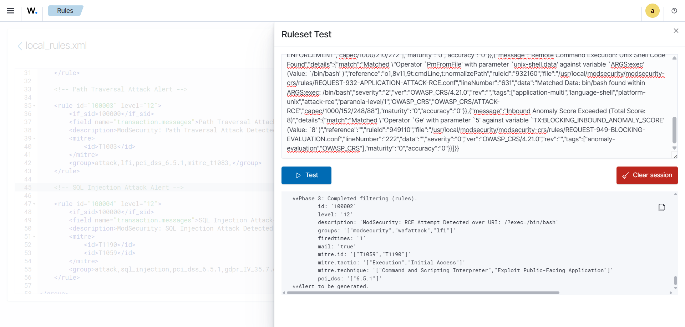

Custom Wazuh Rules for ModSecurity Events
This section describes the creation of custom Wazuh rules that generate actionable alerts from JSON-formatted ModSecurity audit logs. These rules leverage the decoder created previously to detect web application attacks and suspicious requests, mapping them to relevant MITRE techniques and compliance categories.
Below is the full ruleset in a single code block:
<group name="modsecurity,waf">
<!-- Exception Handling Rule -->
<rule id="100000" level="0">
<decoded_as>json</decoded_as>
<field name="transaction.producer.modsecurity">ModSecurity</field>
<description>ModSecurity: Event Exception Handler</description>
</rule>
<!-- General Rule for all types of Triggered Logs -->
<rule id="100001" level="10">
<if_sid>100000</if_sid>
<field name="transaction.response.http_code">403</field>
<description>ModSecurity: Blocked Request (Unidentified)| Inspection Required</description>
<group>attack,pci_dss_6.5,</group>
</rule>
<!-- Remote Command Execution Alert -->
<rule id="100002" level="12">
<if_sid>100000</if_sid>
<field name="transaction.messages">Remote Command Execution</field>
<match>"ruleId":"932160"</match>
<description>ModSecurity: RCE Attempt Detected over URI: $(transaction.request.uri)</description>
<mitre>
<id>T1059</id>
<id>T1190</id>
</mitre>
<group>attack,lfi,pci_dss_6.5.1,</group>
</rule>
<!-- Path Traversal Attack Alert -->
<rule id="100003" level="12">
<if_sid>100000</if_sid>
<field name="transaction.messages">Path Traversal Attack</field>
<match>"ruleId":"930110"</match>
<description>ModSecurity: Path Traversal Attack Detected over URI: $(transaction.request.uri)</description>
<mitre>
<id>T1083</id>
</mitre>
<group>attack,lfi,pci_dss_6.5.1,mitre_t1083,</group>
</rule>
<!-- SQL Injection Attack Alert -->
<rule id="100004" level="12">
<if_sid>100000</if_sid>
<field name="transaction.messages">SQL Injection Attack</field>
<match>"ruleId":"942100"</match>
<description>ModSecurity: SQL Injection Attack Detected over URI: $(transaction.request.uri)</description>
<mitre>
<id>T1190</id>
<id>T1059</id>
</mitre>
<group>attack,sql_injection,pci_dss_6.5.1,gdpr_IV_35.7.d,</group>
</rule>
<!-- OS File Access Attempt Alert -->
<rule id="100005" level="12">
<if_sid>100002</if_sid>
<field name="transaction.messages">OS File Access Attempt</field>
<match>"ruleId":"930120"</match>
<description>ModSecurity: Mutiple Attach Patterns [RCE + OS File Access Attempt] over ($(transaction.request.uri))</description>
<mitre>
<id>T1083</id>
<id>T1190</id>
</mitre>
<group>attack,lfi,pci_dss_6.5.1,mitre_t1083,</group>
</rule>
</group>
Tip
To better understand the rules and its field attributes. It is highly recommended to check out Wazuh’s Rule Writing Syntaxes
Ruleset Testing
Once applied, the results should be the same as we have seen in the Decoder Creation part. Except this time, in Phase - 3, the created rules should be triggered.
Check the image below for reference,
In other word, it means that our custom created rules are working perfectly.
Note
If you are not sure, how we have handled the exception, that we have seen in the Unexpected Rule Trigger During Decoder Testing part, we have actually called <decoded_as>json</decoded_as>
to kind of override the rule id - 1002 that was being triggered earlier. The explanation of the action is, that we specifically called the name of the decoder json
which was being triggered during Phase - 2 of decoder testing and also uniquely identified by defining <field name="transaction.producer.modsecurity">ModSecurity</field>
which mean that the rule will be trigger spacially if it sees that, the logs are being generated from ModSecurity